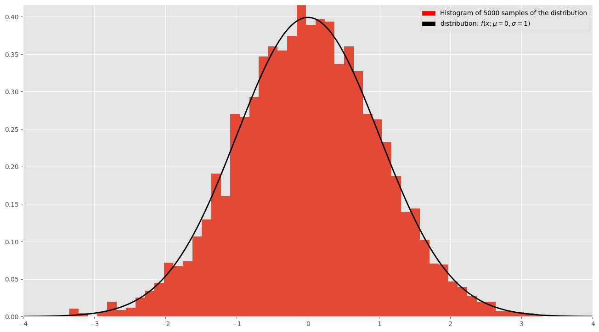
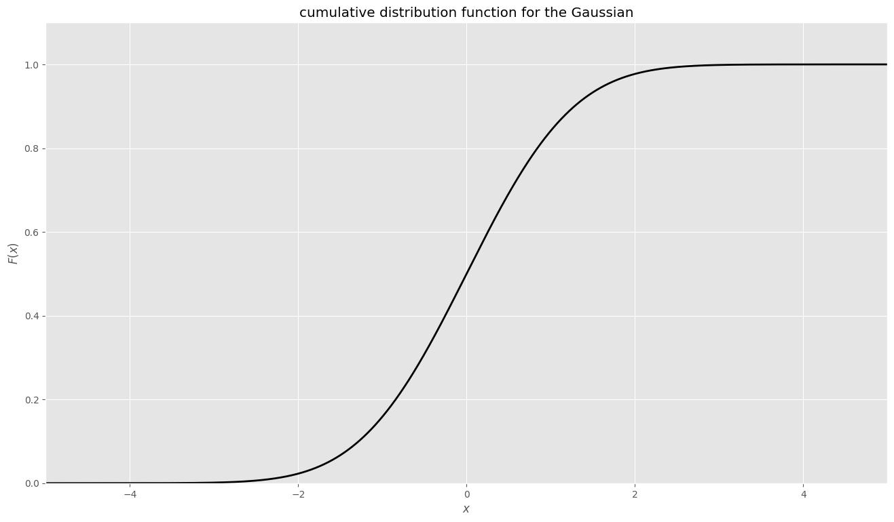
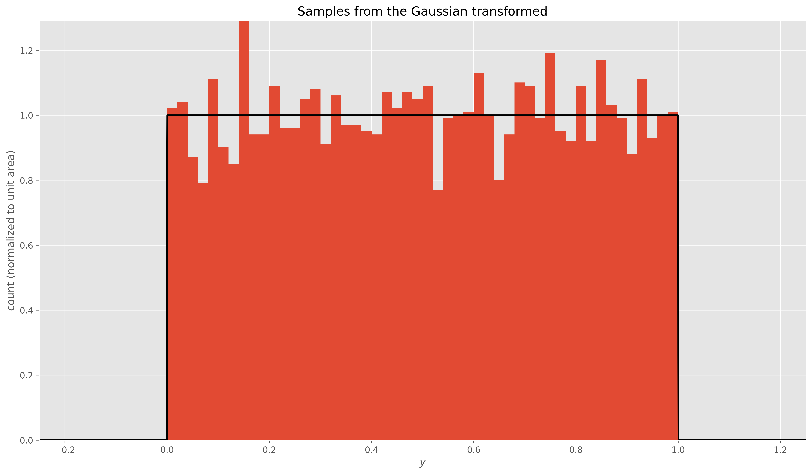
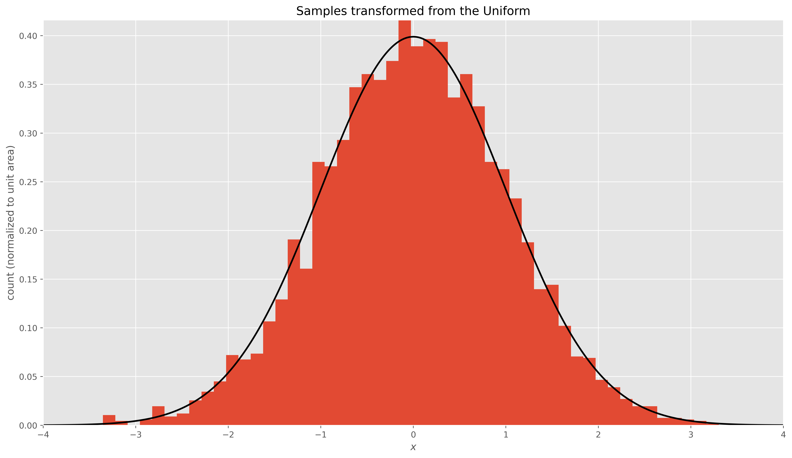

import pandas as pd
import numpy as np
import random
import scipy.stats as stats
import scipy.optimize as optimize
import matplotlib.pyplot as plt
import matplotlib.patches as mpatchesx = np.linspace(-5.0, 5.0, num=10000)
mu = 0
sigma = 1
number_of_samples = 5000
samples = np.random.normal(mu, sigma, number_of_samples)
samples.sort()samplesarray([-3.35444386, -3.34230516, -3.314758 , ..., 3.08263864,
3.15552492, 3.30124444])sample_mean = np.mean(samples)
sample_std = np.std(samples)true_distribution = stats.norm.pdf(x, mu, sigma)fig = plt.figure(figsize=(16,9), dpi=100)
plt.style.use('ggplot')
ax1 = fig.add_subplot(1, 1, 1)
n, bins, _ = ax1.hist(samples, bins=50, density=True)
ax1.plot(x, true_distribution, linewidth=2, color='black')
ax1.set_xlim(-4, 4)
ax1.set_ylim(0, n.max())
sample_patch = mpatches.Patch(
color = 'black',
label=fr'distribution: $f(x; \mu={mu}, \sigma={sigma})$',
)
data_patch = mpatches.Patch(
color='red',
label=f'Histogram of {number_of_samples} samples of the distribution',
)
plt.legend(handles=[data_patch, sample_patch])
plt.show()
fig, ax = plt.subplots(figsize=(16,9), dpi=100)
plt.style.use('ggplot')
ax.plot(x, stats.norm.cdf(x), linewidth=2, color='black')
ax.set_xlabel('$x$')
ax.set_ylabel('$F(x)$')
ax.set_xlim(-5, 5)
ax.set_ylim(0, 1.1)
ax.set_title('cumulative distribution function for the Gaussian')
plt.show()
output = stats.norm.cdf(samples)fig, ax = plt.subplots(figsize=(16,9), dpi=500)
n, bins, _ = ax.hist(
output, bins=50, density=True,
)
ax.plot(x, stats.uniform.pdf(x), linewidth=2, color='black')
ax.set_title('Samples from the Gaussian transformed')
ax.set_xlabel('$y$')
ax.set_ylabel('count (normalized to unit area)')
ax.set_xlim(-0.25, 1.25)
ax.set_ylim(0, n.max())
plt.show()
recovered = stats.norm.ppf(output)fig, ax = plt.subplots(figsize=(16,9), dpi=500)
n, bins, _ = ax.hist(
recovered, bins=50, density=True
)
ax.plot(x, true_distribution, linewidth=2, color='black')
ax.set_title('Samples transformed from the Uniform')
ax.set_xlabel('$x$')
ax.set_ylabel('count (normalized to unit area)')
ax.set_xlim(-4, 4)
ax.set_ylim(0, n.max())
plt.show()